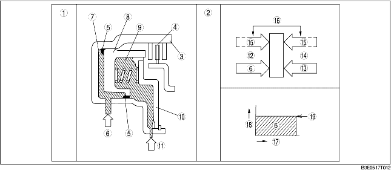

Wenn kein Kupplungsdruck anliegt
• Bei Rotation der Kupplungstrommel wirkt die Zentrifugalkraft auf das in Kupplungsdruckkammer verbleibende Öl, wodurch der entstehende Zentrifugaldruck den Kolben beaufschlagt. Da jedoch gleichzeitig die Zentrifugalkraft auf die mit ATF gefüllte Ausgleichskammer der Kupplung wirkt, baut sich ein Gegendruck am Kolben auf. Diese zwei Kräfte heben sich gegenseitig auf, wodurch der Kolben in Position verharrt und ein Schleifen der Kupplung verhindert wird.
Wenn Kupplungsdruck anliegt
• Wenn Kupplungsdruck an die Kupplungskammer angelegt wird, überwindet der Kupplungsdruck die Summe aus Öldruck und Feder in der gegenüberliegenden Zentrifugaldruck-Ausgleichskammer und bewegt den Kolben in Einrückrichtung. Da der Zentrifugaldruck, der auf den Kupplungsdruck in der Kupplungskammer wirkt, durch den Zentrifugaldruck, der in der Ausgleichskammer herrscht, neutralisiert wird, hat die durch die Rotation der Kupplungstrommel entstehende Zentrifugalkraft keinen Einfluss auf die Kupplungsfunktion. Damit kann für alle Drehzahlen der Kupplungstrommel ein stabiler Kolbendruck und ein gleichförmiger Einrückvorgang realisiert werden.

.